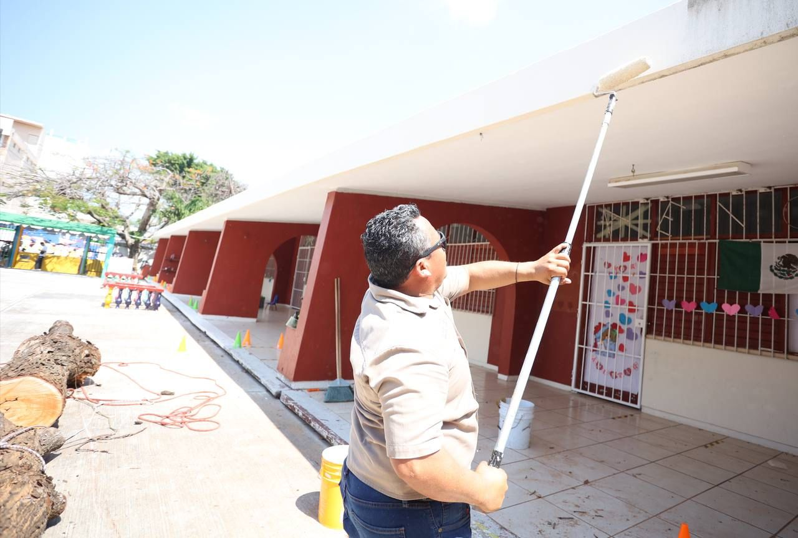
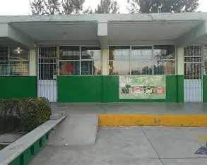

Bienvenidos a mi pagina web :D
Mi nombre es Karen Yamileth Miss Tamay Grado:6 Grupo:A

Y mi edad es de 17 Años Cumplo el 31 de mayo
Mis Hobbies son:
- Dibujar
- Colorear
- Y Jugar videojuegos
- Hacer manualidades
| Hobbie | Dia | Hora |
|---|---|---|
| Jugar videojuegos | Lunes | 4pm |
| Dibujar | Martes | 6pm |
| Jugar videojuegos | Miercoles | 3pm |
| Colorear | Jueves | 7pm |
| Dibujar | Viernes | 5pm |
| Hacer manualidades | Sabados | 7pm |
| Jugar videojuegos | Domingo | 5pm |
Paso el tiempo libre dibujando o coloreando en digital aunque suelo hacerlo seguido por el tiempo libre, me agrada mucho hacer esto
Aca les dejare un ejemplo de lo que hago

Mis Habilidades son:
- Atencion a los demas
- Empatia
- Memoria
- Y Liderazgo

Historial Academico
Soy estudiante del colegio de bachilleres del Estado de Quintana Roo planel Cancun 2 y estoy en la capacitacion de "Tecnologia de la informacion y la Comunicacion (NEM)
Desde los 4 años entre al kinder, participe a varios eventos que realizaba la misma escuela y bueno de ahi me pase a la primaria que estaba alado de ese kinder y ya de ahi
estudie en la secundaria Tecnica 32 "Independencia de mexico" logre sacar buenas calificaciones y pude hacer varios amgos durante el ciclo escolar y otra cosa es que en la
primaria me cambie de escuela cuando estaba en tercer grado a una primaria que se encuentra mas cerca de mi casa asi mismo estudie en una secundaria cercana
Este es un video del Plantel Cancun 2
 Kinder Xel-HaAqui estudie a los 4 años, pase al kinder a los 4 años en segundo grado, habia aprendido a escribir antes de entrar aunque se me dificultaba hablar bien como la letra "R" Datos del Kinder |
 Escuela Primaria "Tierra y Libertad"Esta fue la primaria a donde asisti aunque entre en tercer grado ya que me habia cambiado de escuela por temas de trasnporte y tuve que ir a una mas cercana a mi casa, aca pase los 3 ultimos años de la primaria Datos de la Primaria |
Escuela Secundaria Tecnica 32 "Independencia de mexicopor ultimo pase a la secundaria donde me afecto la pandemia y tuve ciertas dificultades con los estudios aparte que me toco el turno vespertino en primero y segundo grado de la se cundaria ya fue hasta en tercer grado donde pude ir a la mañana y bueno pase un buen rato agradable junto a mis amigo Datos de la Secundaria |

mis Debilidades Y mis Fortalezas son:
Poca confianza
Voz baja al exponer
Me canso rapido al correr
Impaciente
Fortalezas
Creatividad
Curiosidad
Amabilidad
Compromiso
Eso es todo de la pagina, espero que les gustes :D